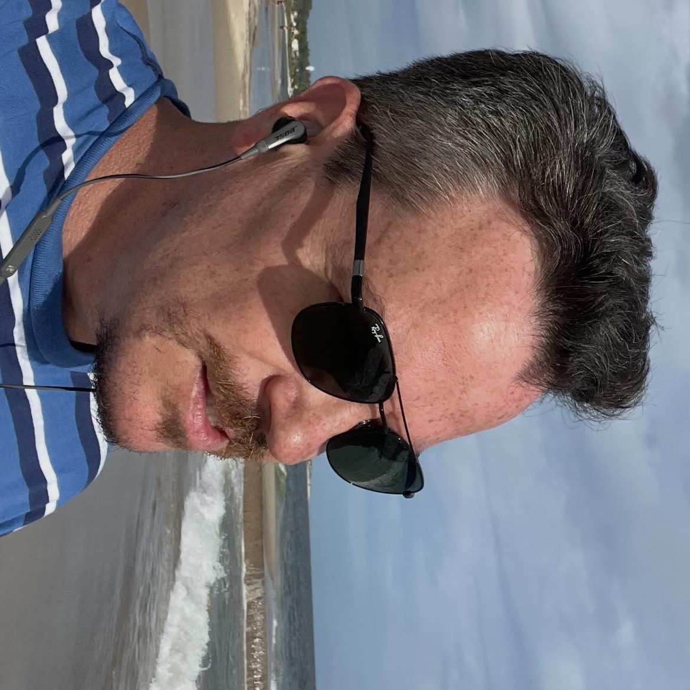

Perfil profesional y humano

Soy Juan Pablo Fernández Rebosio, médico psiquiatra. Mi enfoque es humano y práctico: rutinas que reduzcan el estrés, mejoren el sueño y acompañen el estado de ánimo. Integro tecnología cuando aporta claridad y continuidad del cuidado.
En qué puedo ayudarte
- Ansiedad, estrés, trastornos del ánimo y del sueño.
- Procesos de burnout, foco/atención y hábitos.
- Plan de bienestar: descanso, respiración, movimiento y estructura semanal.
Cómo trabajo
- Primera entrevista: historia clínica y objetivos compartidos.
- Seguimiento breve, claro y medible.
- Privacidad, comunicación directa y material de apoyo.